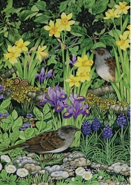

Geraldine Hedderick

Mae’r Llwybr Cerfluniau yn cyflwyno gosodiadau, perfformiadau a cherfluniau o amgylch chastell mwnt a beili Aberlleiniog, drwy’r coed ac ar draeth Lleiniog.
The Sculpture Trail presents installations, performances and sculpture around the Aberlleiniog motte and bailey castle, throughout the woodlands and at Lleiniog beach.
07929 492056
jo4lexander@hotmail.co.uk
ABERLLEINIOG CAR PARK, LLANGOED, LL58 8NN / LLEINIOG CAR PARK, PENMON, LL58 8RN
Dechrau yng Ngŵyl Grefft Coedlannau ym Maes Parcio Llangoed neu ym Maes Parcio Traeth Lleiniog. Bws gwennol yn cael ei gynnig rhwng y ddau leoliad.
Start at Coppice Craft Festival at Llangoed Car Park or at Lleiniog Beach Car Park. Shuttle bus offered between the two locations.